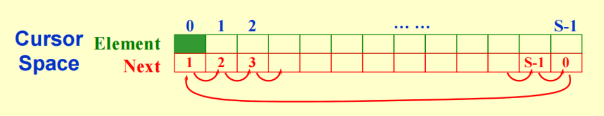

线性数据结构¶
约 4659 个字 61 行代码 1 张图片 预计阅读时间 16 分钟
线性数据结构中的元素按先后次序排列。除首尾元素外，每个元素都有唯一的直接前驱和直接后继。线性表、栈、队列和串都具有这样的逻辑关系，但对元素和操作的限制各不相同。
抽象数据类型¶
抽象数据类型 (Abstract Data Type, ADT) 描述一组数据及其上的操作，关注的是“可以执行哪些操作、操作应满足什么条件”，而将具体的存储方式和实现过程留给实现层。换句话说，我们只关心它能做什么 (Specification)，而不关心它怎么做 (Implementation)。
因此，讨论一种数据结构时，需要区分 逻辑结构、存储结构和操作的实现。例如，“插入元素”是逻辑操作，而“移动数组元素”或“修改链表指针”是实现该操作的具体方式。
线性表¶
线性表 (List) 是具有相同数据类型的 \(n\) 个数据元素的有限序列，记作 \((a_1, a_2, \dots, a_n)\)。其中 \(n\) 为表长；当 \(n=0\) 时，称为空表。
线性表的基本操作包括初始化、求表长、判空、按位访问、按值查找，以及插入、删除和修改元素。常见的存储方式有 顺序存储 和 链式存储。
顺序表¶
顺序表使用一段连续的存储空间，按逻辑次序存放元素，通常用数组实现。
- 按位访问：可以由首地址和元素下标直接计算存储位置，时间复杂度为 \(O(1)\)。
- 按值查找：对于无序表，一般需要顺序扫描，最坏时间复杂度为 \(O(n)\)。
- 插入和删除：为保持元素的连续存放，通常需要移动后续元素，最坏时间复杂度为 \(O(n)\)。
- 容量管理：静态数组需要预先确定最大容量；动态数组可以扩容，但扩容时可能需要分配新空间并复制原有元素。
链表¶
链表通过指针连接各个节点，节点在内存中可以分散存放。单链表的每个节点包含 数据域 和指向后继节点的 指针域。
按位访问或按值查找时，需要从表头沿指针逐个访问，最坏时间复杂度为 \(O(n)\)。插入和删除则主要通过修改指针完成。
插入、删除的复杂度
在单链表中，已知插入位置的前驱节点，或 已知被删节点及其前驱节点 时，修改链接的时间复杂度为 \(O(1)\)。若还需要从表头寻找这些节点，则整个操作的最坏时间复杂度仍为 \(O(n)\)。
修改链接的顺序
假设 node 是有效节点，newNode 已分配空间，在 node 后插入新节点：
先保存原来的后继，再让前驱指向新节点。如果交换这两步，原来的后续链表会失去入口。
假设 prevNode 是待删节点 node 的前驱，且节点由 malloc 分配，删除时执行：
先将待删节点从链表中摘除，再释放其空间。
为了统一处理首元节点处的插入和删除，常在其前面设置一个 头节点 (Dummy Head)。头节点不存放有效的数据元素；头指针指向头节点，而头节点的后继才是第一个有效元素。
链表还可以扩展为：
- 双向链表：每个节点同时保存前驱和后继指针，便于向两个方向访问，也便于在已知节点处执行删除。
- 循环链表：单链表的尾节点指向头节点；无头节点时，则指向首元节点。遍历结束条件由遇到
NULL改为回到起点。 - 双向循环链表：同时具有前驱、后继指针和循环结构。带头节点的空表中，头节点的两个指针都指向自身。
游标实现的链表¶
游标 (Cursor) 实现使用数组模拟节点空间，以 数组下标代替指针。数组中的每个记录保存数据，以及后继节点所在的下标，因此也称为静态链表。

在同一个数组中，可以分别维护数据链表和 空闲链表 (Freelist)。数据链表连接有效元素，空闲链表连接尚未使用的数组单元。
- 分配节点：从空闲链表中摘下一个单元，用它存放新元素，相当于模拟
malloc。 - 释放节点：将不再使用的单元重新链接到空闲链表中，相当于模拟
free。
这种方式适合没有指针机制或需要统一管理节点空间的场景。它保留了链式存储通过链接确定逻辑次序的特点，但可用节点总数受数组容量限制。
多重链表：学生与课程
假设有 40000 名学生和 2500 门课程，需要分别查询“某名学生选了哪些课”和“某门课有哪些学生”。用二维数组记录选课关系，需要为所有学生与课程的组合预留位置，而实际关系通常很稀疏。
可以为每条选课记录建立一个节点，让它同时属于一条学生链表和一条课程链表。节点分别保存沿两个方向访问的链接，于是可以从学生或课程任一入口遍历相关记录。这与稀疏矩阵的十字链表表示具有相同的思路。
栈¶
栈 (Stack) 是只允许在一端插入和删除的线性表。允许操作的一端称为 栈顶，另一端称为 栈底。其访问次序是 后进先出 (Last In, First Out, LIFO)。
主要操作包括：
push：入栈，将元素放到栈顶。pop：出栈，删除并通常返回栈顶元素。top：读取栈顶元素，不改变栈。- 此外还有初始化、判空、清空和销毁等操作。
栈可以用数组或链表实现。在容量足够的顺序栈中，或以链表表头为栈顶的链栈中，入栈和出栈的时间复杂度均为 \(O(1)\)。
栈的边界条件
空栈上执行出栈或读取栈顶违反了操作的前提条件，称为 下溢。固定容量的顺序栈已满时继续入栈，则会发生 上溢；实现时应先检查相应条件。
栈的应用¶
括号匹配¶
从左向右扫描表达式。遇到左括号时入栈；遇到右括号时，检查栈顶是否为对应的左括号，匹配则出栈，否则匹配失败。扫描结束后，栈应为空。
后缀表达式求值¶
后缀表达式将运算符放在操作数之后，例如 a b + c * 表示 \((a+b)\times c\)。从左向右扫描：
- 遇到操作数，将其入栈。
- 遇到二元运算符，先弹出 右操作数，再弹出 左操作数，计算后将结果入栈。
- 合法表达式扫描结束后，栈中剩下的唯一元素就是结果。
对于减法和除法，两个操作数的弹出顺序尤其重要。
中缀表达式转后缀表达式¶
使用一个运算符栈保存尚未输出的运算符。操作数保持原有先后次序，运算符按照优先级和结合性安排输出：
- 遇到操作数，直接输出。
- 遇到左括号，入栈。
- 遇到右括号，依次弹出并输出运算符，直到遇到左括号；将这对括号丢弃。
- 遇到运算符，先弹出并输出栈顶优先级更高的运算符。若当前运算符是 左结合 的，还要弹出优先级相同的运算符；随后将当前运算符入栈。弹出过程在左括号处停止。
- 扫描结束后，依次弹出并输出栈中剩余的运算符。
常见的 +、-、*、/ 均按左结合处理。括号只控制运算次序，不出现在最终的后缀表达式中。
函数调用与递归¶
函数调用通常通过 调用栈 保存返回地址、参数和局部状态。后调用的函数先返回，与栈的后进先出次序一致。递归也依赖这一机制，其辅助空间与同时存在的调用层数有关；满足条件时，编译器可以将尾递归优化为循环。
队列¶
队列 (Queue) 是只允许在一端插入、另一端删除的线性表。插入端称为 队尾，删除端称为 队首，其访问次序是 先进先出 (First In, First Out, FIFO)。
主要操作包括 enqueue（入队）、dequeue（出队）、front（读取队首），以及初始化、判空和销毁等。
链式队列¶
链式队列同时保存队首和队尾指针。在队尾插入、队首删除时，均只需修改常数个链接，时间复杂度为 \(O(1)\)。删除最后一个有效节点后，需要同步更新队尾指针，使其与空队列的表示保持一致。
循环队列¶
如果直接用数组存储队列，随着入队和出队，队首、队尾会逐渐向数组末端移动，前面已经释放的位置却无法继续使用。循环队列 通过取模运算把数组的首尾连接起来：
以下沿用 Weiss 教材的表示方式：Front 指向 队首元素，Rear 指向 队尾元素，另用 Size 记录元素个数。
struct QueueRecord {
int Capacity; /* 数组容量，要求大于 0 */
int Front; /* 队首元素的位置 */
int Rear; /* 队尾元素的位置 */
int Size; /* 当前元素个数 */
ElementType *Array; /* 指向已分配的元素数组 */
};
其中 ElementType 表示队列元素类型。采用从 0 开始的数组下标时，各操作为：
- 初始化：
Front = 0，Rear = Capacity - 1，Size = 0。 - 入队：确认队列未满，令
Rear = (Rear + 1) % Capacity，在该位置写入元素，再令Size++。 - 出队：确认队列非空，取出
Array[Front]，令Front = (Front + 1) % Capacity，再令Size--。 - 判空、判满：分别检查
Size == 0和Size == Capacity。
因此，循环队列的入队和出队均为 \(O(1)\)，且可以使用全部 Capacity 个数组单元。
另一种常见约定：队尾指向下一个空位
也可以令 front 指向队首元素，rear 指向 下一次入队的位置，并牺牲一个数组单元区分空与满。此时：
- 初始化：
front = rear = 0。 - 队空：
front == rear。 - 队满：
(rear + 1) % Capacity == front。 - 元素个数：
(rear - front + Capacity) % Capacity。
这种表示最多存放 Capacity - 1 个元素。使用公式前，应先明确 rear 的含义和判满方式。
串与模式匹配¶
串 (String) 是由零个或多个字符组成的有限序列。串长为 0 时称为空串；由一个或多个空格构成的串仍然具有非零长度。串中的一段连续字符构成 子串，待查找的串称为 模式串，被搜索的串称为 主串。
模式匹配 要确定模式串在主串中出现的位置。下面讨论的匹配算法中，我们关注首次出现的位置。
在本章，我们约定设主串为 \(S\)、长度为 \(n\)，模式串为 \(T\)、长度为 \(m\)。字符从 1 开始编号，即 \(S[1\dots n]\)、\(T[1\dots m]\)。匹配成功则返回起始位置，失败则返回 0；空模式串约定在位置 1 匹配成功。
朴素模式匹配¶
朴素算法依次尝试主串中的每一个可能起点，从模式串的第一个字符开始逐个比较。若遇到不相等的字符，就将起点后移一位并重新比较；若模式串全部匹配，则返回当前起点。
用 \(i\)、\(j\) 分别表示主串和模式串当前比较的位置，失配前的起点为 \(i-j+1\)，因此失配后可令：
当 \(1\le m\le n\) 时，最多尝试 \(n-m+1\) 个起点，每次最多比较 \(m\) 个字符，最坏时间复杂度为 \(O((n-m+1)m)\)，通常简写为 \(O(nm)\)；辅助空间复杂度为 \(O(1)\)。若 \(m>n\)，可以直接判定匹配失败。
KMP 算法¶
基本思想¶
KMP 算法 (Knuth–Morris–Pratt) 利用模式串自身的重复结构，在失配后保留已经获得的匹配信息。其关键是：主串指针 \(i\) 不回退，只调整模式串指针 \(j\)。
如果你感兴趣...
- KMP 原始论文；
- NIST 算法与数据结构词典 从有限状态机的角度概括了该算法。
假设 \(S[i]\) 与 \(T[j]\) 发生失配，那么此时 \(T[1\dots j-1]\) 已与主串中的对应部分匹配。如果这段已匹配子串（失配字符之前的部分）的某个后缀恰好也是模式串的前缀，就可以让这个前缀与已匹配后缀对齐，继续比较当前的 \(S[i]\)。
为了最大化收益，我们选择其中 最长 的相等前后缀，以保留最多的已匹配字符，并尝试最靠前的剩余候选起点。这个信息仅由模式串决定，可以预先计算。
我们接下来来看看它的具体实现。
next 数组¶
前后缀的定义
我们称 前缀 (prefix) 是从串首开始的子串；后缀 (suffix) 是到串尾结束的子串。
特别提醒
后缀 不是从串尾开始倒着往前 形成的。如果不太习惯，读者朋友们可以想一下英文单词中是如何定义前后词根词缀的。
进一步地，我们定义 真前缀 是所有前缀中长度小于原串的那些，真后缀 是所有后缀中长度小于原串的那些。例如，ababa 的最长相等真前后缀是 aba，长度为 3。
我们定义一个 next 数组来实现匹配。其中 next[j] 为：在模式串第 \(j\) 个字符处失配后，应将 \(j\) 调整到的位置。对 \(j\ge 2\)，令 \(\ell\) 为 \(T[1\dots j-1]\) 的最长相等真前后缀长度，则：
next[1] = 0：第一个字符就失配，说明主串当前字符无法作为匹配起点。这里 0 是一种“控制标记”，说明下一轮匹配要令i++、j++，从下一个主串字符重新开始。- 一般情况下，失配后算法执行
j = next[j]，主串指针i保持不变。若再次失配，就继续沿next回退。
求 next 数组¶
手动计算 next 的方法是比较直观的。假设我们有模式串 ababac，逐个位置考察 失配字符之前 的部分：
例如，在 \(j=6\) 处失配时，已匹配部分为 ababa，其最长相等真前后缀为 aba，长度为 3 ，所以 next[6] = 4。接下来用 \(T[4]\) 与当前主串字符比较，模式串相当于右移了 \(6-4=2\) 位。
也可以利用前序已经计算出的结果求 next。对 \(i\ge 2\)，设我们已知 next[i] = j，即 \(T[1\dots i-1]\) 的最长相等真前后缀长为 \(j-1\)。现在我们要求 next[i + 1]：
- 若 \(T[i]=T[j]\)，已有的相等前后缀可以各延长一个字符，得到
next[i + 1] = j + 1。 - 若两者不等，就令
j = next[j]，尝试更短的相等前后缀。 - 若退到
j == 0，说明无法延长任何候选前缀，此时令next[i + 1] = 1。
假设 \(m\ge 1\)，且 next 分配到的空间足够（\(\ge m+1\)）：
void GetNext(const char T[], int m, int next[]) {
int i = 1, j = 0;
next[1] = 0;
while (i < m) {
if (j == 0 || T[i] == T[j]) { // j == 0 放在逻辑或的左侧，利用短路求值跳过对 T[0] 的比较
++i;
++j;
next[i] = j;
} else {
j = next[j];
}
}
}
求表过程中 \(i\) 单调增加，\(j\) 的回退总量受其增加总量限制，因此预处理时间为 \(O(m)\)。
使用 next 进行匹配¶
以下函数接收已经构造好的 next 数组；\(n,m\) 为非负长度，且有效字符按本节约定从下标 1 开始存放：
int IndexKMP(const char S[], int n, const char T[], int m,
const int next[]) {
if (m == 0) return 1;
if (m > n) return 0;
int i = 1, j = 1;
while (i <= n && j <= m) {
if (j == 0 || S[i] == T[j]) {
++i;
++j;
} else {
j = next[j];
}
}
return j > m ? i - m : 0;
}
当 \(m>0\) 时，先调用 GetNext，再将结果传给 IndexKMP。同一个模式串的表可以重复用于不同主串。空模式串直接调用匹配函数即可，无需构造表。
匹配过程：在 abababac 中查找 ababac
- 从 \(i=j=1\) 开始，前 5 个字符均相等。
- 到 \(i=6\)、\(j=6\) 时，主串字符
b与模式串字符c失配。 - 保持 \(i=6\)，令 \(j=\operatorname{next}[6]=4\)。已有后缀
aba与模式串前缀对齐，无需重新比较。 - 从 \(S[6]\) 与 \(T[4]\) 开始，剩余的
bac全部匹配。此时 \(i=9\)、\(j=7\)，返回 \(i-m=3\)。
nextval 数组¶
普通 next 还可能安排一些可以提前排除的比较。若在 \(T[j]\) 处失配，令 \(k=\operatorname{next}[j]\)，且 \(T[k]=T[j]\)，那么已经知道 \(S[i]\ne T[j]\)，也就知道 \(S[i]\ne T[k]\)。这次比较可以直接跳过。
因此，可以将失配表进一步优化为 nextval：
对 \(j\ge 2\)，令 \(k=\operatorname{next}[j]\)，则
由于 \(k<j\)，可以从左向右计算。下面接收普通 next 表，输出另一个独立数组 nextval，两个数组均应有至少 \(m+1\) 个单元：
void GetNextval(const char T[], int m, const int next[], int nextval[]) {
if (m == 0) return;
nextval[1] = 0;
for (int j = 2; j <= m; ++j) {
int k = next[j];
nextval[j] = (T[j] == T[k]) ? nextval[k] : k;
}
}
仍以 ababac 为例：
例如 next[5] = 3，但 \(T[5]=T[3]=T[1]=\texttt{a}\)。若在第 5 个字符处失配，再依次与第 3、第 1 个字符比较都必然失败，因此 nextval[5] = 0。
将 nextval 作为 IndexKMP 的最后一个参数，即可使用优化后的匹配过程。nextval 减少了部分重复比较，总时间复杂度仍为 \(O(n+m)\)。
复杂度分析¶
- 预处理：构造
next需要 \(O(m)\)；在此基础上构造nextval同样需要 \(O(m)\)。 - 匹配阶段：\(i\) 最多前进 \(n\) 次，每次最多让 \(j\) 增加 1 ；失配时 \(j\) 严格减小，且不会小于 0。因此所有回退操作的总次数为 \(O(n)\)，匹配时间为 \(O(n)\)。
- 总体：预处理加匹配的总时间复杂度为 \(O(n+m)\)，失配表占用 \(O(m)\) 的辅助空间；已有失配表时，匹配过程自身只需 \(O(1)\) 的额外空间。
next 与前缀函数的对应关系
另一种常见写法使用从 0 开始的模式串下标，并定义 前缀函数 \(\pi[r]\)：它表示子串 \(T[0\dots r]\) 的最长相等真前后缀长度。
对同一个模式串，本节的 1 起始 next 与 0 起始前缀函数满足：
例如 ababac 的前缀函数为 0, 0, 1, 2, 3, 0，而本节的 next 为 0, 1, 1, 2, 3, 4。区别在于：前缀函数记录 截至当前字符的长度，本节的 next 记录 当前字符失配后的比较位置。阅读不同实现时，应先对齐下标、表项含义和失配时的更新语句。